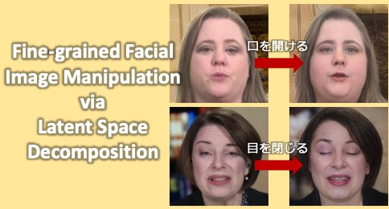
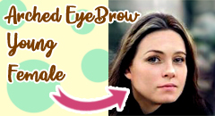

2026.07
FreeEyeglass was accepted to TMLR.
Ianna · Doctoral Student, Computer Vision Laboratory, The University of Osaka
I am a doctoral student in the Computer Vision Laboratory at The University of Osaka, Japan, advised by Prof. Fumio Okura. My research focuses on computer vision and generative models, especially controllable image and video synthesis, diffusion models, latent-space editing, and applications that make generative models more reliable and useful in real-world settings.
News
Research interests
Projects
TMLR
A training-free and mask-free approach for transferring eyeglasses in facial videos, designed for practical video editing without requiring additional model training or manually prepared masks.
Pattern Recognition, 2026
A method for controlling multi-instance distributions in text-to-image diffusion models, with the goal of improving controllability and representation of underrepresented groups.
CVPRW 2026
A project on part-level visual swapping and editing, presented at a CVPR workshop.
Scientific Reports, 2024
A weakly supervised medical-imaging project that quantifies skeletal muscle recovery from hematoxylin and eosin-stained images using learning from label proportion.
MICCAI ADS-MIA Workshop, 2024
A label-proportion-based learning approach for classifying skeletal muscle recovery stages, combining weak supervision with medical imaging analysis.

MIRU 2023 · Interactive Presentation Award
A latent-space decomposition approach for fine-grained facial image manipulation, enabling more detailed control of facial attributes and expressions.

MIRU 2021
A StyleGAN-based face synthesis project using multi-resolution classifiers for attribute-driven generation and control.
For a complete record, see the full publication list.
Contact
chan.wengian{at}ist.osaka-u.ac.jp
(replace {at} with @)
Computer Vision Laboratory
Graduate School of Information Science and Technology
The University of Osaka
1-5 Yamadaoka, Suita, Osaka 565-0871, Japan